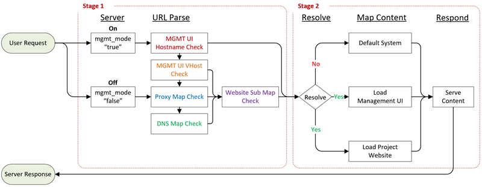

Request Handling
How Mapping Works
With reference to Proxy Mapping and DNS FQDN resolution, the server analyzes the URL / URI path and breaks it down to figure out how it needs to resolve to project website content. There are basically 2 stages of figuring this out.
- Stage 1 - has to deal with the process of matching to DNS or Proxy mapping, or if Management UI is enabled and if viewing a VHost preview for a project website. Also, figuring out if sub folders are mapping to a different website (sub maps).
- Stage 2 - deals with the configuation for project website mapping paramters for what is static content and what is to be executed on the server side. Which project content is for serving and what project files are not exposed to web clients.
System logging information has a bit of detail in the 'Match Log' field which is the output of how the server figured out what to serve and how for that request. System Administration panels also has a simulator for verifying a URL and how it will work with the rules defined for website mapping in various environments. The output window for the simulator is what usually exists in the system 'Match Log' logging field.
The following is a simple diagram on the request matching process. Take note to the colour coding for stage 1 reference to the 'Incoming Requests' details below. When the Management Mode is disabled or turned off. The user's incoming connection bypasses any Mamangement UI IP addresses, hostnames or FQDN configurations. The system will go directly to matching to Proxy and DNS FQDN mappings. The matching order typically happens in order from top to bottom as a first match wins. Sub mapping only applies after the project and website are identified from a VHost preview, Proxy or DNS FQDN match. Management UI does not have sub mapping functionality as it's not required.

Stage 1 URL Parsing
The URL / URI colour coding helps to identify what parts of the entire address are used for matching.
https:// hostname/*
https:// hostname/vhost/project::website/*
https:// hostname/vhost/project::website/sub_map/*
https:// www.domain.com/proxy_path/*
https:// www.domain.com/proxy_path/sub_map/*
https:// www.domain.com/*
https:// www.domain.com/sub_map/*
Brief description:
- Hostname or a Domain Name (FQDN) assigned to Management UI (if enabled)
- VHost Preview path resolving to user project and website (if Management UI is enabled)
- Proxy Map URL having a domain name and path resolving to a project and website
- DNS Name (FQDN) resolving directly to a project and website
- Sub Path (Sub Map) resolving to another website under user’s project (same project)
Stage 2 Project Website Parameters
In the manage websites section, there is a lot more details about configurations. As a brief description there are 4 main categories for the content that is being served. These are matched in order of the list. First match wins.
- API fixed path - Mapping a base URI path to a specific file location in the project website for server side exection. This means any URI path that starts with a path defined will all resolve to a target file.
- API dynamic path - Mapping a base URI path to a specific folder location in the project website for server side exection. This means it will map to folders and files that start with the URI path name. It can be any folder of file in that target location.
- Static Override - Override for static content that must execute on the server side. This is very similar to API fixed path but related to static path locations.
- Static Content - The default root path for the website static content.
The next it will check is maintenance mode and custom error pages paths. Those are special URI paths.